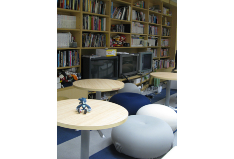
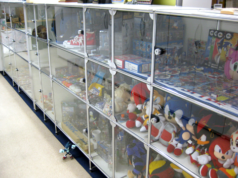
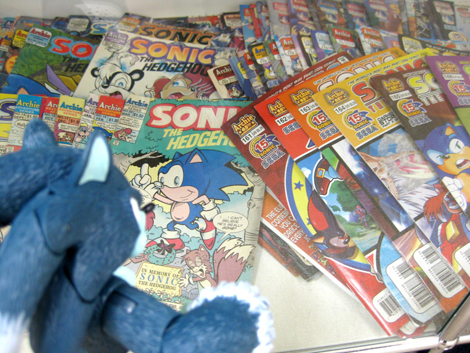
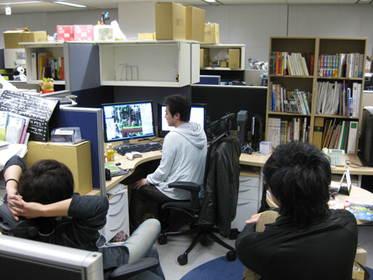
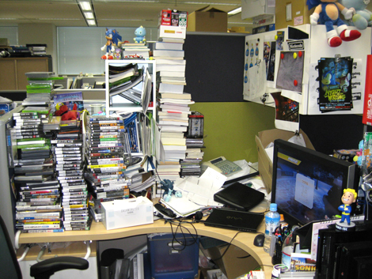

『制作現場をご紹介します』
2008年12月26日
こんにちは。
先輩に、
「アイコンがさかなの子に似てるね」と言われたヨシノです。
こんにちは！ マツバラです！
本日は、『SWA』制作もひと段落して
ゆったりとした雰囲気の『SWA』制作部署の様子をお届けします。
『SWA』制作中の部署内は、
まさに戦場だったけどね。
今は「戦いの跡地」ってかんじで平和に……
ヨシノ！
余計なこと言わなくていいから！
さ、さあ、どんどんいきましょー♪

ここは、部内の歓談スペースです。
椅子やテーブル、TVモニタ、ゲーム雑誌、
各種ハードや最新のゲームタイトルが並んでいます。
ここでは誰でも最新ゲームやり放題です。
でも、ただ遊んでいるわけじゃありません！
ゲーム開発に関わる人間として、
ここで最先端のゲームに触れ、
その研究をするという目的があるのです！
おお～。
『SWA』開発中にこっそり席を抜けて
ここで我を忘れて延々とゲームに興じていたマツバラとは思えないリッパな発言。
ば、バラさないで！
ちなみにここは通称「チャオガーデン」と呼ばれています。
当部署の部屋はそれぞれ
「ソニックルーム」「テイルスルーム」「ナックルズルーム」というように
ソニックシリーズのキャラクターの名前がついています。

ここは、チャオガーデン横にある
ディスプレイスペースです！
ソニックグッズが、ずら～り。

これは……外国の雑誌かな？
すごい量だね。
そう！
ソニックは世界中で人気のキャラクターです！
世界最速の青いハリネズミといえば、
セガが誇るクールなヒーロー♪
ソニックの名前にちなんで命名された
「Sonic Gene」という遺伝子まであるのよ！
へー……
私とソニックの出会いは、思い起こせば十数年前……
ゲームギア時代のソニックの青くてトンガッた勇姿が印象的で……
(……またマツバラが騒ぎ出した)
じゃあ、次に行きましょう。

ここは各スタッフの席です。
社員はここで実際にゲーム作りをしています。
部署内はパーテーションでブースにわけられており、
1ブースに4～5人が入って仕事をしています。
先輩社員と、『SWA』ディレクターの橋本さんが
打ち合わせをしてるね。
PCモニタには、
『SWA』ソニックステージがうつってます。
何の打ち合わせか気になる～！
……あ、見て見て、マツバラ。

わっ！！ 何ここ！！
えっと……
よくここまでモノを積みあげられたわね！
ゲームソフトとか、触ったら崩れてきそう！
…………。
ウェアホッグも書類の海にうもれて遭難してるじゃない！
ねえヨシノ、ここって誰の席！？
……私たちのボス。
『SWA』ディレクターの橋本さんの席だよ。
！！！！
こ、こんなにゲームや書籍を集めるなんて
研究熱心だね！！
さっすが橋本さん！！
……マツバラ。
フォローしても
もう遅いと思うよ……。
日時: 2008年12月26日 14:00 | パーマリンク


 ソニックを愛する、元気な『SWA』2年目プランナー。
ソニックを愛する、元気な『SWA』2年目プランナー。 マイペースな『SWA』2年目プランナー。
マイペースな『SWA』2年目プランナー。
 ご意見・ご要望はこちら
ご意見・ご要望はこちら RSS
RSS